Code
import arviz as az
import pandas as pd
import numpy as np
import pymc3 as pm
from matplotlib import pylab as plt
from scipy import stats
from patsy import dmatrix
az.style.use("arviz-darkgrid")
az.rcParams["stats.hdi_prob"] = 0.89import arviz as az
import pandas as pd
import numpy as np
import pymc3 as pm
from matplotlib import pylab as plt
from scipy import stats
from patsy import dmatrix
az.style.use("arviz-darkgrid")
az.rcParams["stats.hdi_prob"] = 0.89For the model definition below, simulate observed \(y\) values from the prior (not the posterior).
\[y \sim \text{Normal}(\mu, \sigma) \] \[\mu \sim \text{Normal}(0, 10) \] \[\sigma \sim \text{Exponential}(1) \]
n_samples = 1000
sample_mu = stats.norm.rvs( loc=0, scale=10, size=n_samples )
sample_std = stats.expon.rvs( scale=1 , size=n_samples )
sample_y = stats.norm.rvs( loc=sample_mu, scale=sample_std, size=n_samples )az.plot_kde(sample_y)
plt.title('Distribution of Prior Predictive values')Text(0.5, 1.0, 'Distribution of Prior Predictive values')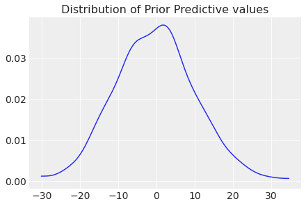
plt.hist(sample_y)(array([ 10., 35., 116., 202., 232., 218., 118., 47., 17., 5.]),
array([-30.14262363, -23.65619686, -17.1697701 , -10.68334333,
-4.19691657, 2.2895102 , 8.77593697, 15.26236373,
21.7487905 , 28.23521727, 34.72164403]),
<a list of 10 Patch objects>)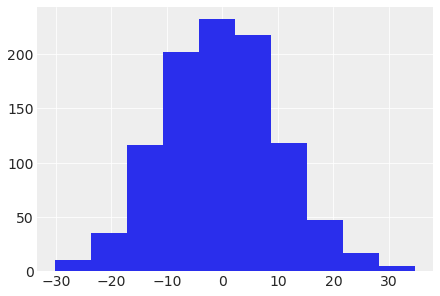
A sample of students is measured for height each year for 3 years. After the third year, you want to fit a linear regression predicting height using year as a predictor. Write down the mathematical model definition for this regression, using any variable names and priors you choose. Be prepared to defend your choice of priors.
Let \(h_{ij}\) be the height of the \(i\)-th student in year \(j\) (where \(j \in \{1,2,3\}\)).
\[h_{ij} \sim N(\mu_{ij},\sigma)\] \[\mu_{ij} = \alpha + \beta(x_{ij}-\bar{x})\] \[\alpha \sim N(100,10)\] \[\beta \sim \text{Normal}(0,10)\] \[\sigma \sim \text{Exponential}(1)\]
Next, let’s simulate a dataset consisting of 40 children:
n_samples = 40
sample_alpha = stats.norm.rvs( loc=100, scale=10, size=n_samples )
sample_beta = stats.norm.rvs( loc=0, scale=10, size=n_samples )
sample_std = stats.expon.rvs( scale=1 , size=n_samples )
years = np.array([1,2,3])
xbar = np.mean( years )
# sample_y = stats.norm.rvs( loc=sample_mu, scale=sample_std, size=n_samples )# Each row is a student, column 1 is for year-1, column 2 is for year-2 and
# column 3 is for year-3
sample_mu = ( sample_alpha.reshape(n_samples, 1) +
sample_beta.reshape(n_samples, 1) * (years - xbar).reshape(1, 3) )# Each row is a student, column 1 is for year-1, column 2 is for year-2 and
# column 3 is for year-3
sample_height = np.zeros((n_samples, 3))
for i in range(n_samples):
for j in years:
mu_ij = sample_alpha[i] + sample_beta[i]*(j - xbar)
sample_height[i, j-1] = stats.norm.rvs( mu_ij , sample_std[i] )for i in range(n_samples):
plt.plot( years , sample_height[i] , color='blue' )
plt.xticks( years )
plt.xlabel( 'year' )
plt.ylabel( 'height (cm)' )Text(0, 0.5, 'height (cm)')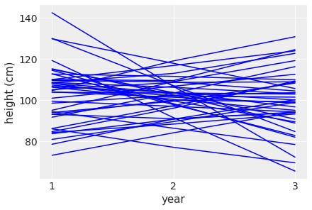
Each line tracks the simulated height of each student across the 3 years. Clearly there are some nonsensical relationships here where the height for some students actually goes down across the years.
Now suppose I remind you that every student got taller each year. Does this information lead you to change your choice of priors? How?
Yes, we can impose a Log-Normal prior on the slope so that it is constrained to be positive. Per [1], if \(Z \sim \text{Normal}(0,1)\) and if \(\mu\) and \(\sigma > 0\) are two real numbers then \(\beta = e^{\mu + \sigma Z}\) is log-normally distributed with parameters \(\mu\) and \(\sigma\). Also \(E[\beta] = e^{\mu + \frac{1}{2}\sigma^{2}}\). * So if \(\mu=1\) and \(\sigma=0.1\) then \(E[\beta] \approx 2.73 \text{cm/year}\)
n_samples = 40
sample_alpha = stats.norm.rvs( loc=100, scale=10, size=n_samples )
sample_beta = np.random.lognormal( mean=1, sigma=0.1, size=n_samples)
sample_std = stats.expon.rvs( scale=1 , size=n_samples )
years = np.array([1,2,3])
xbar = np.mean( years )
sample_height = np.zeros((n_samples, 3))
for i in range(n_samples):
for j in years:
mu_ij = sample_alpha[i] + sample_beta[i]*(j - xbar)
sample_height[i, j-1] = stats.norm.rvs( mu_ij , sample_std[i] )for i in range(n_samples):
plt.plot( years , sample_height[i] , color='blue' )
plt.xticks( years )
plt.xlabel( 'year' )
plt.ylabel( 'height (cm)' )Text(0, 0.5, 'height (cm)')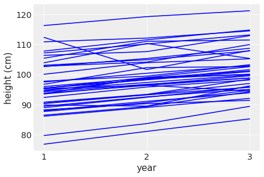
This looks much better with height increasing across the years. However there are still some weird observations where the height zig-zags.
Now suppose I tell you that the variance among heights for students of the same age is never more than 64cm. How does this lead you to revise your priors?
This would lead me to set \(\sigma \sim \text{Uniform}(0,\sqrt{64})\)
Refit model m4.3 from the chapter, but omit the mean weight xbar this time. Compare the new model’s posterior to that of the original model. In particular, look at the covariance among the parameters. What is different? Then compare the posterior predictions of both models.
| height | weight | age | male | |
|---|---|---|---|---|
| 0 | 151.765 | 47.825606 | 63.0 | 1 |
| 1 | 139.700 | 36.485807 | 63.0 | 0 |
| 2 | 136.525 | 31.864838 | 65.0 | 0 |
| 3 | 156.845 | 53.041914 | 41.0 | 1 |
| 4 | 145.415 | 41.276872 | 51.0 | 0 |
xbar = d2.weight.mean()
with pm.Model() as m4_3:
a = pm.Normal("a", mu=178, sd=20)
b = pm.Lognormal("b", mu=0, sd=1)
sigma = pm.Uniform("sigma", 0, 50)
mu = a + b * (d2.weight - xbar)
height = pm.Normal("height", mu=mu, sd=sigma, observed=d2.height)
trace_4_3 = pm.sample(1000, tune=1000, return_inferencedata=False)
with pm.Model() as m4M7:
alpha = pm.Normal( 'alpha', mu=178, sd=20 )
beta = pm.Lognormal( 'beta', mu=0, sd=1 )
sigma = pm.Uniform( 'sigma' , lower=0, upper=50 )
mu = alpha + beta*d2.weight
height = pm.Normal( 'height' , mu=mu, sd=sigma, observed=d2.height )
trace_4M7 = pm.sample(1000, tune=1000, return_inferencedata=False)Auto-assigning NUTS sampler...
Initializing NUTS using jitter+adapt_diag...
Sequential sampling (2 chains in 1 job)
NUTS: [sigma, b, a]Sampling 2 chains for 1_000 tune and 1_000 draw iterations (2_000 + 2_000 draws total) took 19 seconds.
Auto-assigning NUTS sampler...
Initializing NUTS using jitter+adapt_diag...
Sequential sampling (2 chains in 1 job)
NUTS: [sigma, beta, alpha]Sampling 2 chains for 1_000 tune and 1_000 draw iterations (2_000 + 2_000 draws total) took 27 seconds.
The acceptance probability does not match the target. It is 0.8897350788344733, but should be close to 0.8. Try to increase the number of tuning steps.az.summary(trace_4M7, kind="stats")Got error No model on context stack. trying to find log_likelihood in translation.
/usr/local/lib/python3.7/dist-packages/arviz/data/io_pymc3_3x.py:102: FutureWarning: Using `from_pymc3` without the model will be deprecated in a future release. Not using the model will return less accurate and less useful results. Make sure you use the model argument or call from_pymc3 within a model context.
FutureWarning,| mean | sd | hdi_5.5% | hdi_94.5% | |
|---|---|---|---|---|
| alpha | 114.491 | 1.858 | 111.612 | 117.473 |
| beta | 0.892 | 0.041 | 0.826 | 0.955 |
| sigma | 5.093 | 0.202 | 4.750 | 5.383 |
az.summary(trace_4_3, kind="stats")Got error No model on context stack. trying to find log_likelihood in translation.
/usr/local/lib/python3.7/dist-packages/arviz/data/io_pymc3_3x.py:102: FutureWarning: Using `from_pymc3` without the model will be deprecated in a future release. Not using the model will return less accurate and less useful results. Make sure you use the model argument or call from_pymc3 within a model context.
FutureWarning,| mean | sd | hdi_5.5% | hdi_94.5% | |
|---|---|---|---|---|
| a | 154.604 | 0.281 | 154.128 | 155.004 |
| b | 0.903 | 0.043 | 0.839 | 0.975 |
| sigma | 5.104 | 0.202 | 4.774 | 5.416 |
Model 4_3 intercept (a) is larger than in M47 (alpha) but the slope is roughly the same.
plt.scatter(d2['weight'], d2['height'])
plt.plot(d2['weight'], ( trace_4M7['alpha'].mean() +
trace_4M7['beta'].mean()*d2['weight'] ),
color='orange' )
plt.xlabel(d2.columns[1])
plt.ylabel(d2.columns[0])Text(0, 0.5, 'height')
First add the uncertainty around the average height.
trace_iq = trace_4M7 #trace in question
posterior_samples = np.random.randint(len(trace_iq), size=10000)
weight_seq = np.arange(0, 71)cred_intervals = np.array(
[ az.hdi( trace_iq['alpha'][posterior_samples] +
trace_iq['beta'][posterior_samples]*wt ) for wt in weight_seq ]
)cred_intervals.shape(71, 2)plt.scatter(d2['weight'], d2['height'])
plt.plot(weight_seq, ( trace_4M7['alpha'].mean() +
trace_4M7['beta'].mean()*weight_seq ),
color='orange' )
plt.fill_between(
weight_seq, cred_intervals[:, 0], cred_intervals[:, 1], alpha=0.4,
label=r"Uncertainty in $\mu$",
)
plt.xlabel(d2.columns[1])
plt.ylabel(d2.columns[0])
plt.axvline(np.mean(d2.weight), ls="--", c="r", label="Mean weight")
plt.legend()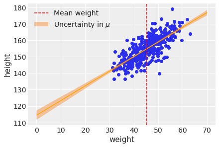
Next add the uncertainty around the actual heights making use of the standard deviation.
trace_iq['alpha'][posterior_samples].shape(10000,)# define a function to compute mu for all posterior samples at given value of
# weight
def compute_mu(w):
return ( trace_iq['alpha'][posterior_samples] +
trace_iq['beta'][posterior_samples] * w )
pi_67 = np.array(
[
az.hdi(np.random.normal(loc=compute_mu(x),
scale=trace_iq['sigma'][posterior_samples]),
hdi_prob=0.67)
for x in weight_seq
]
)
pi_89 = np.array(
[
az.hdi(np.random.normal(loc=compute_mu(x),
scale=trace_iq['sigma'][posterior_samples]))
for x in weight_seq
]
)
pi_97 = np.array(
[
az.hdi(np.random.normal(loc=compute_mu(x),
scale=trace_iq['sigma'][posterior_samples]),
hdi_prob=0.97)
for x in weight_seq
]
)plt.scatter(d2['weight'], d2['height'])
plt.plot(weight_seq, ( trace_4M7['alpha'].mean() +
trace_4M7['beta'].mean()*weight_seq ),
color='black' )
plt.fill_between(
weight_seq, cred_intervals[:, 0], cred_intervals[:, 1], alpha=0.2,
label=r"Uncertainty in $\mu$",
)
plt.fill_between(
weight_seq, pi_67[:, 0], pi_67[:, 1],
alpha=0.2, color='blue'
)
plt.fill_between(
weight_seq, pi_89[:, 0], pi_89[:, 1],
alpha=0.1, color='blue'
)
plt.fill_between(
weight_seq, pi_97[:, 0], pi_97[:, 1],
alpha=0.05, color='blue'
)
plt.xlabel(d2.columns[1])
plt.ylabel(d2.columns[0])
plt.axvline(np.mean(d2.weight), ls="--", c="r", label="Mean weight")
plt.xlim(d2.weight.min(), d2.weight.max());
plt.legend()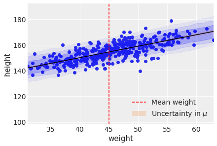
Another way to generate the same plot.
# Given that we have 2,000 samples let's use 200 for plotting
# (or we can use all of them too if desired)
trace_iq_thinned = trace_iq[::10]
mu_pred = np.zeros((len(weight_seq), len(trace_iq_thinned) * trace_iq.nchains))
for i, w in enumerate(weight_seq):
mu_pred[i] = ( trace_iq_thinned["alpha"] +
trace_iq_thinned["beta"] * w )trace_iq_thinned, mu_pred.shape(<MultiTrace: 2 chains, 100 iterations, 5 variables>, (71, 200))mu_mean = mu_pred.mean(1)
mu_hdi = az.hdi(mu_pred.T)
mu_mean.shape, mu_hdi.shape/usr/local/lib/python3.7/dist-packages/ipykernel_launcher.py:2: FutureWarning: hdi currently interprets 2d data as (draw, shape) but this will change in a future release to (chain, draw) for coherence with other functions
((71,), (71, 2))Generate heights from the posterior manually.
post_samples = []
for _ in range(10000): # number of samples from the posterior
i = np.random.randint(len(trace_iq))
mu_pr = trace_iq['alpha'][i] + trace_iq['beta'][i] * weight_seq
sigma_pred = trace_iq['sigma'][i]
post_samples.append(np.random.normal(mu_pr, sigma_pred))ax=az.plot_hdi(weight_seq, mu_pred.T)
az.plot_hdi(weight_seq, np.array(post_samples), ax=ax, hdi_prob=0.67)
az.plot_hdi(weight_seq, np.array(post_samples), ax=ax, hdi_prob=0.89)
az.plot_hdi(weight_seq, np.array(post_samples), ax=ax, hdi_prob=0.97)
plt.scatter(d2.weight, d2.height)
plt.plot(weight_seq, mu_mean, "k")
plt.axvline(np.mean(d2.weight), ls="--", c="r", label="Mean weight")
plt.xlabel("weight")
plt.ylabel("height")
plt.xlim(d2.weight.min(), d2.weight.max());/usr/local/lib/python3.7/dist-packages/arviz/plots/hdiplot.py:157: FutureWarning: hdi currently interprets 2d data as (draw, shape) but this will change in a future release to (chain, draw) for coherence with other functions
hdi_data = hdi(y, hdi_prob=hdi_prob, circular=circular, multimodal=False, **hdi_kwargs)
/usr/local/lib/python3.7/dist-packages/arviz/plots/hdiplot.py:157: FutureWarning: hdi currently interprets 2d data as (draw, shape) but this will change in a future release to (chain, draw) for coherence with other functions
hdi_data = hdi(y, hdi_prob=hdi_prob, circular=circular, multimodal=False, **hdi_kwargs)
/usr/local/lib/python3.7/dist-packages/arviz/plots/hdiplot.py:157: FutureWarning: hdi currently interprets 2d data as (draw, shape) but this will change in a future release to (chain, draw) for coherence with other functions
hdi_data = hdi(y, hdi_prob=hdi_prob, circular=circular, multimodal=False, **hdi_kwargs)
/usr/local/lib/python3.7/dist-packages/arviz/plots/hdiplot.py:157: FutureWarning: hdi currently interprets 2d data as (draw, shape) but this will change in a future release to (chain, draw) for coherence with other functions
hdi_data = hdi(y, hdi_prob=hdi_prob, circular=circular, multimodal=False, **hdi_kwargs)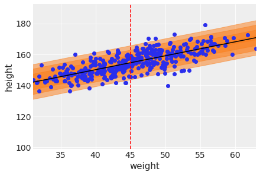
trace_4M7_df = pm.trace_to_dataframe( trace_4M7 )
trace_4M7_df.cov().round(3)| alpha | beta | sigma | |
|---|---|---|---|
| alpha | 3.452 | -0.076 | -0.026 |
| beta | -0.076 | 0.002 | 0.001 |
| sigma | -0.026 | 0.001 | 0.041 |
There doesn’t seem to be much of a covariance between the parameters. This is similar to what we saw in m_4_3 (shown below).
pm.trace_to_dataframe( trace_4_3 ).cov().round(3)| a | b | sigma | |
|---|---|---|---|
| a | 0.079 | -0.000 | -0.000 |
| b | -0.000 | 0.002 | 0.000 |
| sigma | -0.000 | 0.000 | 0.041 |
Next let’s examine the correlations.
trace_4M7_df.corr().round(3)| alpha | beta | sigma | |
|---|---|---|---|
| alpha | 1.00 | -0.99 | -0.07 |
| beta | -0.99 | 1.00 | 0.07 |
| sigma | -0.07 | 0.07 | 1.00 |
Intercept (alpha) and slope (beta) are negatively correlated unlike model m_4_3.
pm.trace_to_dataframe( trace_4_3 ).corr().round(3)| a | b | sigma | |
|---|---|---|---|
| a | 1.000 | -0.041 | -0.000 |
| b | -0.041 | 1.000 | 0.051 |
| sigma | -0.000 | 0.051 | 1.000 |
In the chapter, we used 15 knots with the cherry blossom spline. Increase the number of knots and observe what happens to the resulting spline. Then adjust also the width of the prior on the weights – change the standard deviation of the prior and watch what happens. What do you think the combination of knot number and the prior on the weight controls?
Suppose \(D_{i}\) be the date of year of the cherry blossom in year \(i\) then a formal description of the model is:
\[D_{i} \sim N(\mu_{i},\sigma)\] \[\mu_{i} = \alpha + \sum_{k=1}^{K}w_{k}B_{ki}\] \[\alpha \sim N(100,10)\] \[w_{k} \sim \text{Normal}(0,10)\] \[\sigma \sim \text{Exponential}(1)\]
\(B_{ki}\) is the value of the \(k\)-th basis function for year \(i\).
url = 'https://raw.githubusercontent.com/rmcelreath/rethinking/'\
'master/data/cherry_blossoms.csv'
d = pd.read_csv(url, sep=';', header=0)
d.head()| year | doy | temp | temp_upper | temp_lower | |
|---|---|---|---|---|---|
| 0 | 801 | NaN | NaN | NaN | NaN |
| 1 | 802 | NaN | NaN | NaN | NaN |
| 2 | 803 | NaN | NaN | NaN | NaN |
| 3 | 804 | NaN | NaN | NaN | NaN |
| 4 | 805 | NaN | NaN | NaN | NaN |
d2 = d.dropna(subset=['doy'])
d2.head()| year | doy | temp | temp_upper | temp_lower | |
|---|---|---|---|---|---|
| 11 | 812 | 92.0 | NaN | NaN | NaN |
| 14 | 815 | 105.0 | NaN | NaN | NaN |
| 30 | 831 | 96.0 | NaN | NaN | NaN |
| 50 | 851 | 108.0 | 7.38 | 12.1 | 2.66 |
| 52 | 853 | 104.0 | NaN | NaN | NaN |
num_knots = 15
knot_list = np.quantile(d2.year, np.linspace(0, 1, num_knots))knot_listarray([ 812., 1036., 1174., 1269., 1377., 1454., 1518., 1583., 1650.,
1714., 1774., 1833., 1893., 1956., 2015.])B = dmatrix(
"bs(year, knots=knots, degree=3, include_intercept=True) - 1",
{"year": d2.year.values, "knots": knot_list[1:-1]},
)np.asarray( B ).shape(827, 17)BDesignMatrix with shape (827, 17)
Columns:
['bs(year, knots=knots, degree=3, include_intercept=True)[0]',
'bs(year, knots=knots, degree=3, include_intercept=True)[1]',
'bs(year, knots=knots, degree=3, include_intercept=True)[2]',
'bs(year, knots=knots, degree=3, include_intercept=True)[3]',
'bs(year, knots=knots, degree=3, include_intercept=True)[4]',
'bs(year, knots=knots, degree=3, include_intercept=True)[5]',
'bs(year, knots=knots, degree=3, include_intercept=True)[6]',
'bs(year, knots=knots, degree=3, include_intercept=True)[7]',
'bs(year, knots=knots, degree=3, include_intercept=True)[8]',
'bs(year, knots=knots, degree=3, include_intercept=True)[9]',
'bs(year, knots=knots, degree=3, include_intercept=True)[10]',
'bs(year, knots=knots, degree=3, include_intercept=True)[11]',
'bs(year, knots=knots, degree=3, include_intercept=True)[12]',
'bs(year, knots=knots, degree=3, include_intercept=True)[13]',
'bs(year, knots=knots, degree=3, include_intercept=True)[14]',
'bs(year, knots=knots, degree=3, include_intercept=True)[15]',
'bs(year, knots=knots, degree=3, include_intercept=True)[16]']
Terms:
'bs(year, knots=knots, degree=3, include_intercept=True)' (columns 0:17)
(to view full data, use np.asarray(this_obj))Let’s plot the basis functions.
_, ax = plt.subplots(1, 1, figsize=(12, 4))
for i in range( B.shape[1] ):
ax.plot(d2.year, (B[:, i]))
ax.set_xlabel("year")
ax.set_ylabel("basis");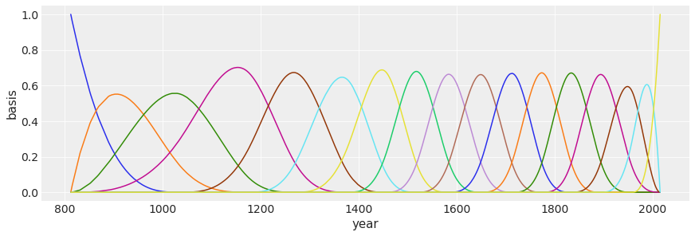
Next, let’s learn the parameters.
with pm.Model() as m_4M8:
a = pm.Normal("a", 100, 10)
w = pm.Normal("w", mu=0, sd=10, shape=B.shape[1])
mu = pm.Deterministic("mu", a + pm.math.dot(B.base, w.T))
sigma = pm.Exponential("sigma", 1)
D = pm.Normal("D", mu, sigma, observed=d2.doy)
trace_m_4M8 = pm.sample(2000, tune=2000, chains=2,
return_inferencedata=False)Auto-assigning NUTS sampler...
Initializing NUTS using jitter+adapt_diag...
Sequential sampling (2 chains in 1 job)
NUTS: [sigma, w, a]Sampling 2 chains for 2_000 tune and 2_000 draw iterations (4_000 + 4_000 draws total) took 81 seconds.
The number of effective samples is smaller than 25% for some parameters.Plot each basis weighted by it’s corresponding parameter.
_, ax = plt.subplots(1, 1, figsize=(12, 4))
wp = trace_m_4M8['w'].mean(0) #17 entries, one for each basis fn
for i in range( B.shape[1] ):
ax.plot(d2.year, (wp[i] * B[:, i]), color="C0")
ax.set_xlim(812, 2015)
ax.set_ylim(-6, 6);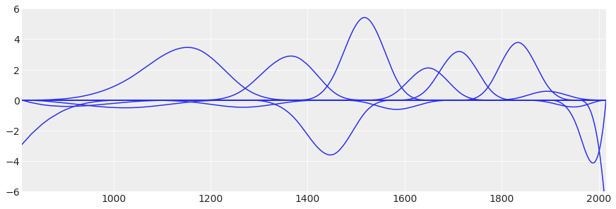
post_pred = ( az.summary(trace_m_4M8, var_names=["mu"], hdi_prob=0.94).
reset_index(drop=True) )
post_pred.head()Got error No model on context stack. trying to find log_likelihood in translation.
/usr/local/lib/python3.7/dist-packages/arviz/data/io_pymc3_3x.py:102: FutureWarning: Using `from_pymc3` without the model will be deprecated in a future release. Not using the model will return less accurate and less useful results. Make sure you use the model argument or call from_pymc3 within a model context.
FutureWarning,| mean | sd | hdi_3% | hdi_97% | mcse_mean | mcse_sd | ess_bulk | ess_tail | r_hat | |
|---|---|---|---|---|---|---|---|---|---|
| 0 | 100.320 | 3.179 | 93.831 | 105.847 | 0.050 | 0.035 | 4039.0 | 3348.0 | 1.0 |
| 1 | 100.406 | 2.994 | 94.330 | 105.655 | 0.047 | 0.033 | 4124.0 | 3292.0 | 1.0 |
| 2 | 100.822 | 2.182 | 96.796 | 105.020 | 0.032 | 0.023 | 4692.0 | 3168.0 | 1.0 |
| 3 | 101.262 | 1.555 | 98.286 | 104.116 | 0.021 | 0.015 | 5426.0 | 3262.0 | 1.0 |
| 4 | 101.302 | 1.514 | 98.484 | 104.162 | 0.021 | 0.015 | 5442.0 | 3287.0 | 1.0 |
plt.fill_between(
d2.year,
post_pred["hdi_3%"],
post_pred["hdi_97%"],
color="firebrick",
alpha=0.4,
);
ax = plt.gca()
ax.plot(d2.year, d2.doy, "o", alpha=0.3)
for knot in knot_list:
ax.axvline(knot, color="grey", alpha=0.4);
ax.plot(d2.year,
post_pred['mean'],
lw=3, color="firebrick")
fig = plt.gcf()
fig.set_size_inches(12, 4)
ax.set_xlabel("year")
ax.set_ylabel("days in year")
ax.set_title(f'knots={num_knots}')Text(0.5, 1.0, 'knots=15')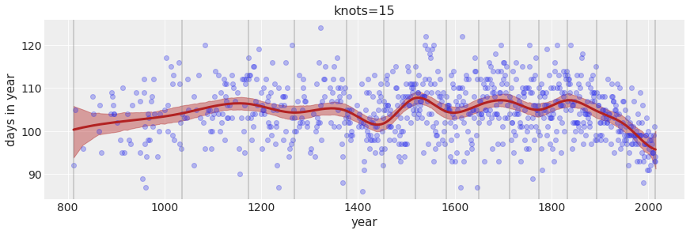
Increase the number of knots to 30.
Text(0.5, 1.0, 'knots=30')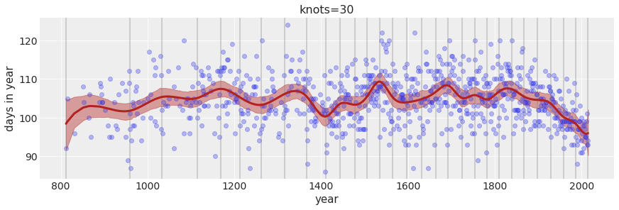
Change the width of the prior on the weights.
Text(0.5, 1.0, 'knots=30; w ~ N(0,100)')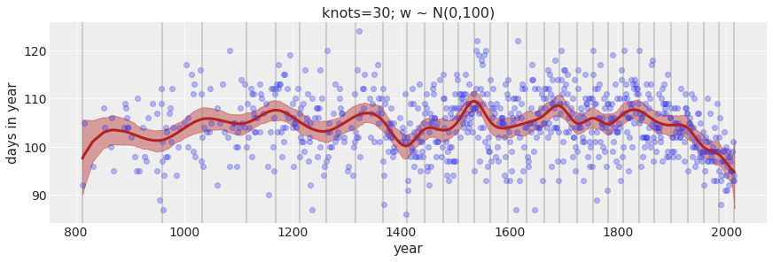
Text(0.5, 1.0, 'knots=30; w ~ N(0,1)')
Text(0.5, 1.0, 'knots=5; w ~ N(0,100)')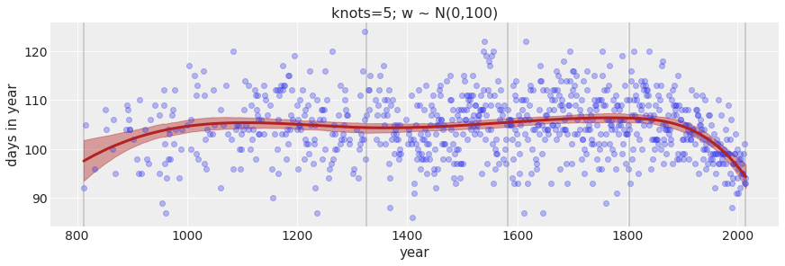
The larger the number of knots the more local variation we are able to capture. The prior on the weight controls how much weights are allowed to vary around the mean. A tighter (smaller) standard deviation on the weight will not allow the weight to vary much.